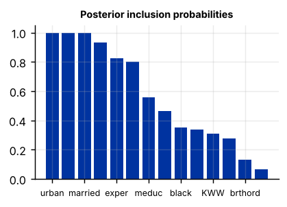

Run this model on your own data in Open Econometric Systems →
Step 1The question and the model
Which of the fourteen variables that might affect wages really belong in a wage equation? The Mincer equation has education and experience, but a researcher can also add IQ, a knowledge-of-the-world test score, tenure, age, marital status, race, region, city, the number of siblings, birth order and both parents' schooling. With 14 candidates there are \(2^{14} = 16{,}384\) possible regressions. Picking one by testing and dropping variables treats the chosen model as if it were known in advance, and the standard errors then ignore the uncertainty about the choice.
Bayesian model averaging (BMA) keeps all the models. For model \(M\) with regressors \(X_M\) the engine uses Zellner's g-prior on the slopes, a flat prior on the constant and \(p(\sigma^2) \propto 1/\sigma^2\):
Under this prior the Bayes factor of \(M\) against the model with no regressors is available in closed form (Liang et al. 2008),
where \(p_M\) is the number of regressors and \(R_M^2\) the model's \(R^2\). A model is rewarded for fit and penalised for each extra regressor. The posterior probability of a model is its Bayes factor times its prior probability, divided by the sum over all models. The posterior inclusion probability (PIP) of a variable is the total probability of the models that contain it.
| Choice | Options in the engine | Default |
|---|---|---|
| g-prior | UIP: \(g = n\); RIC: \(g = k^2\); BRIC: \(g = \max(n, k^2)\) | BRIC |
| Model prior | uniform over models; binomial with a fixed expected size; random inclusion probability with a uniform prior (beta-binomial) | random |
| Search | exact enumeration of all models (up to 18 regressors); MC3 sampler above that | exact up to 14 |
The random-inclusion-probability prior does not tell the data how many regressors to expect: it gives every model size the same prior probability, which is why it is the usual default (Ley and Steel 2009).
Why not just use the t-statistics?
A t-statistic answers "is this coefficient zero in this one model?" and depends on which other variables are in it. A PIP answers "how likely is the variable to belong, given that the rest are uncertain?" It also separates no evidence of an effect from evidence of no effect: a variable with a PIP near zero is one the data say is not needed; a variable with a PIP of one half is one the data cannot decide about.
How to write it: the model
We address model uncertainty by Bayesian model averaging over all \(2^{14}\) linear regressions that include a subset of the 14 candidate regressors and always include a constant. We use Zellner's g-prior with \(g = \max(n, k^2)\) (Fernandez, Ley and Steel 2001), a flat prior on the constant and the usual improper prior on the error variance, so that marginal likelihoods are exact (Liang et al. 2008). The prior over models is the beta-binomial prior with a uniform prior on the inclusion probability (Ley and Steel 2009). We report posterior inclusion probabilities, model-averaged coefficients and the posterior probabilities of the best models, and we study sensitivity to both priors.
Step 2Load the data
import numpy as np
import pandas as pd
import oes_engine as oes # pip install -e open-econometric-systems/oes-engine
data = open("wage2.csv").read()
df = pd.read_csv("wage2.csv")
x = ["IQ", "KWW", "educ", "exper", "tenure", "age", "married", "black", "south", "urban", "sibs", "brthord", "meduc", "feduc"]
print(len(df), "men, no missing values:", df[["lwage"] + x].notna().all(axis=1).all())
print(df[["lwage"] + x].describe().round(2).loc[["mean", "std", "min", "max"]].T)663 men, no missing values: True
mean std min max
lwage 6.81 0.41 4.74 8.03
IQ 102.48 14.69 54.00 145.00
KWW 36.19 7.53 13.00 56.00
educ 13.68 2.23 9.00 18.00
exper 11.40 4.26 1.00 22.00
tenure 7.22 5.06 0.00 22.00
age 32.98 3.06 28.00 38.00
married 0.90 0.30 0.00 1.00
black 0.08 0.27 0.00 1.00
south 0.32 0.47 0.00 1.00
urban 0.72 0.45 0.00 1.00
sibs 2.85 2.24 0.00 14.00
brthord 2.18 1.49 1.00 10.00
meduc 10.83 2.82 0.00 18.00
feduc 10.27 3.29 0.00 18.00How to read it
663 men with no missing values in any of the 15 variables. Log wages average 6.81 with a standard deviation of 0.41. Many of the candidates are correlated: education and the two parents' schooling, IQ and the knowledge test, age and experience. Correlated candidates are where model averaging matters most, because a single regression can pick any one of a group of substitutes and say nothing about the others. All regressors must be numeric; categorical variables must be turned into dummies first.
Step 3Estimate
spec = dict(y="lwage", x=x)
r = oes.run("bma", data, spec)
oes.summary(r)
oes.show(r, "Posterior inclusion")
oes.plot(r)Observations: 663
Candidate regressors: 14
Models evaluated: 16384
Expected model size: 8.05
Posterior probability of the best model: 0.0477
Variables with PIP above 0.5: 7
Posterior inclusion probabilities and coefficients (averaged over models)
PIP Post. mean Post. s.d. Mean if included S.d. if included P(sign | incl.)
Variable
urban 1.000 0.1962 0.0318 0.1962 0.0318 1.000
educ 0.999 0.0448 0.0111 0.0448 0.0110 1.000
married 0.998 0.2041 0.0472 0.2044 0.0465 1.000
IQ 0.931 0.0039 0.0016 0.0042 0.0013 0.999
exper 0.824 0.0121 0.0071 0.0147 0.0048 0.998
tenure 0.799 0.0070 0.0044 0.0087 0.0030 0.998
meduc 0.559 0.0081 0.0083 0.0144 0.0057 0.993
age 0.466 0.0070 0.0088 0.0151 0.0066 0.988
black 0.351 -0.0416 0.0658 -0.1186 0.0569 0.982
south 0.336 -0.0218 0.0356 -0.0649 0.0313 0.981
KWW 0.311 0.0015 0.0026 0.0049 0.0024 0.975
feduc 0.275 0.0028 0.0054 0.0103 0.0054 0.967
brthord 0.133 -0.0018 0.0060 -0.0137 0.0103 0.910
sibs 0.065 0.0001 0.0020 0.0018 0.0078 0.577
Note: PIP = posterior probability that the variable is in the model. Post. mean averages over all models (zero when excluded); P(sign | incl.) is the probability that the coefficient has the sign of its mean, given inclusion.
How to read it
All 16,384 models were evaluated, so there is no simulation error. The columns are the PIP, the model-averaged posterior mean and standard deviation (a coefficient counts as zero in the models that exclude the variable), the mean and standard deviation given that the variable is in the model, and the probability that the coefficient has the sign of its mean given inclusion.
Three variables are in nearly every good model: urban (PIP 1.000), educ (0.999) and married (0.998). A year of education raises wages by 4.5% (posterior standard deviation 0.011), a city location by 19.6% and marriage by 20.4%. IQ (0.931), experience (0.824) and tenure (0.799) are probably in. Mother's education is a coin flip (0.559), age is close to one half (0.466), and the other variables have PIPs between 0.07 and 0.35: black (0.351), south (0.336), the knowledge test (0.311), father's education (0.275), birth order (0.133) and number of siblings (0.065). The chart shows the same ordering. With 7 variables above one half, the expected model has 8 regressors (8.05).
The last two columns show why model-averaged and conditional coefficients differ. Black has a model-averaged coefficient of \(-0.042\) with a standard deviation of 0.066, because the variable is in only 35% of the weight and averaging shrinks the estimate. Given that it is in, the coefficient is \(-0.119\) (standard deviation 0.057). Quote the first as the best overall estimate and the second as "the effect if it matters".
Step 4The best models and the number of regressors
oes.show(r, "Best")
oes.show(r, "Posterior distribution of model size")Best 10 models
Posterior prob. Size R-squared Variables
Rank
1 0.0477 7 0.260 IQ, educ, exper, tenure, married, urban, meduc
2 0.0330 8 0.266 IQ, educ, exper, tenure, age, married, urban, meduc
3 0.0323 7 0.259 IQ, educ, tenure, age, married, urban, meduc
4 0.0263 8 0.266 IQ, educ, exper, tenure, married, black, urban, meduc
5 0.0234 8 0.266 IQ, KWW, educ, exper, tenure, married, urban, meduc
6 0.0203 8 0.265 IQ, educ, exper, tenure, married, south, urban, meduc
7 0.0166 9 0.271 IQ, educ, exper, tenure, age, married, black, urban, meduc
8 0.0164 7 0.258 IQ, educ, exper, tenure, married, urban, feduc
9 0.0156 8 0.265 IQ, educ, exper, tenure, age, married, urban, feduc
10 0.0153 6 0.250 IQ, educ, exper, tenure, married, urban
Note: Exact posterior probabilities from all 2^k models.
Posterior distribution of model size
Posterior prob. Prior prob.
Size
0 0.0000 0.0667
1 0.0000 0.0667
2 0.0000 0.0667
3 0.0000 0.0667
4 0.0000 0.0667
5 0.0059 0.0667
6 0.0695 0.0667
7 0.2646 0.0667
8 0.3365 0.0667
9 0.2133 0.0667
10 0.0816 0.0667
11 0.0225 0.0667
12 0.0050 0.0667
13 0.0010 0.0667
14 0.0002 0.0667How to read it
No model dominates: the best has a posterior probability of only 0.048, and the ten best together hold about 0.24. They all contain IQ, education, tenure, marriage and city, and differ in whether they add experience, age, mother's or father's education, race, region or the knowledge test. That is the case for averaging: a researcher who picked the best model would have been right 5% of the time, and the standard errors would not reflect that.
The size table compares the prior with the posterior. The prior gives each size from 0 to 14 the same probability (0.067); the posterior puts 0.81 of its weight on models of 7 to 9 regressors and almost none (0.006) on models of 5 or fewer. The data have moved the prior a long way, so the results do not depend on the prior's information about size.
Step 5Compare with the full regression
import statsmodels.api as sm
ols = sm.OLS(df["lwage"], sm.add_constant(df[x])).fit(cov_type="HC3")
pip = oes.frame(next(t for t in r["tables"] if t["title"].startswith("Posterior inclusion")))
cmp = pd.DataFrame({"PIP": pip["PIP"], "OLS t (HC3)": ols.tvalues.reindex(pip.index), "OLS p": ols.pvalues.reindex(pip.index)}).round(3)
print(cmp)PIP OLS t (HC3) OLS p Variable urban 1.000 6.165 0.000 educ 0.999 4.309 0.000 married 0.998 4.044 0.000 IQ 0.931 3.001 0.003 exper 0.824 2.502 0.012 tenure 0.799 2.508 0.012 meduc 0.559 1.549 0.121 age 0.466 1.373 0.170 black 0.351 -1.867 0.062 south 0.336 -1.407 0.159 KWW 0.311 1.134 0.257 feduc 0.275 1.021 0.307 brthord 0.133 -1.285 0.199 sibs 0.065 1.187 0.235
How to read it
The two rankings agree about the extremes: the six variables with the highest PIP are the ones with the largest t-statistics (urban 6.2, education 4.3, marriage 4.0, IQ 3.0, tenure 2.5, experience 2.5), and the variables with the lowest PIPs have the smallest t-statistics. Where they differ, the PIP is more informative. Mother's education (t = 1.55, p = 0.12) has a PIP of 0.56, because many good models include it. Age (t = 1.37) has 0.47. Black (t = \(-1.87\), p = 0.06) has a PIP of 0.35: a coefficient that is borderline in one regression carries only a third of the posterior weight, since models without it fit almost as well. A rule of thumb is that a PIP above 0.9 is "robust", 0.5 to 0.9 "probably in" and below 0.5 "not supported"; state the rule if you use one.
Step 6Robustness: the priors
The results should not depend on the arbitrary choices of the prior. The sensitivity table re-evaluates all 16,384 models under nine combinations of g-prior and model prior.
oes.show(r, "Prior sensitivity")Prior sensitivity: PIPs of the six variables with the highest PIP
Model prior urban educ married IQ exper tenure Expected size
g-prior
UIP uniform 1.0 0.999 0.998 0.926 0.803 0.775 7.72
UIP binomial (size 3.5) 1.0 0.996 0.995 0.909 0.741 0.624 6.80
UIP random 1.0 0.999 0.998 0.931 0.824 0.799 8.05
BRIC uniform 1.0 0.999 0.998 0.926 0.803 0.775 7.72
BRIC binomial (size 3.5) 1.0 0.996 0.995 0.909 0.741 0.624 6.80
BRIC random 1.0 0.999 0.998 0.931 0.824 0.799 8.05
RIC uniform 1.0 0.999 0.999 0.936 0.844 0.835 8.32
RIC binomial (size 3.5) 1.0 0.998 0.997 0.917 0.771 0.711 7.27
RIC random 1.0 1.000 0.999 0.947 0.882 0.876 9.09
Note: Each row re-computes the posterior over all models with a different prior.How to read it
The three variables with a PIP near one stay at 0.995 to 1.000 in all nine rows. The middle group moves: experience between 0.74 and 0.88 and tenure between 0.62 and 0.88, with the lowest values under the binomial prior with expected size 3.5, which favours small models, and the highest under RIC with the random prior (9.1 regressors expected). UIP and BRIC are identical because \(n = 663\) exceeds \(k^2 = 196\), so \(g = n\) in both. The conclusions about which variables matter are the same for all nine priors; only the borderline ones (tenure, experience) change by more than 0.1, and neither crosses 0.5. Report the range of PIPs over the priors you tried.
Step 7Check the search: the MC3 sampler
With more than about 18 regressors the models cannot all be enumerated, and the engine uses MC3, a sampler that moves between models by adding, dropping or swapping a regressor. You can also request it with 14 regressors to check it against the exact answer.
m = oes.run("bma", data, dict(spec, method="mc3", draws=50000, burn=5000, seed=1))
ta = lambda res: oes.frame(next(t for t in res["tables"] if t["title"].startswith("Posterior inclusion")))["PIP"]
chk = pd.DataFrame({"exact": ta(r), "MC3": ta(m)})
chk["difference"] = chk["MC3"] - chk["exact"]
print(chk.round(3))
print("largest absolute difference:", chk["difference"].abs().max().round(3))
print(m["notes"][-1])exact MC3 difference Variable IQ 0.931 0.927 -0.004 KWW 0.311 0.306 -0.005 age 0.466 0.440 -0.026 black 0.351 0.367 0.016 brthord 0.133 0.136 0.003 educ 0.999 0.999 0.000 exper 0.824 0.842 0.018 feduc 0.275 0.258 -0.017 married 0.998 0.999 0.001 meduc 0.559 0.568 0.009 sibs 0.065 0.065 0.000 south 0.336 0.341 0.005 tenure 0.799 0.806 0.007 urban 1.000 1.000 0.000 largest absolute difference: 0.026 Marginal likelihoods are exact under the g-prior (Zellner 1986; Liang et al. 2008). With 14 regressors the 2^14 models are sampled by MC3 (50000 iterations after 5000 burn-in; acceptance 0.26).
How to read it
With 50,000 iterations the sampler visits 850 of the 16,384 models, concentrated where the posterior mass is, and its PIPs are within 0.026 of the exact values (largest differences: age \(-0.026\), experience 0.018, father's education \(-0.017\), black 0.016). The ranking of the variables is the same and the same seven variables lie above 0.5. The acceptance rate is 0.26. For a problem too large to enumerate, run MC3 with two different seeds and more iterations, and check that the PIPs agree to about 0.02 before reporting them.
Step 8Diagnostics: does averaging predict better?
BMA is mainly an inference tool, but one should check that it does not forecast worse than the alternatives. Draw 200 men at random as a test sample, fit each method to the other 463 and compare the root mean squared error of the log wage; repeat for 20 random splits.
import statsmodels.api as sm
top = ["IQ", "educ", "exper", "tenure", "married", "urban", "meduc"] # the highest-probability model of Step 4
d = df[["lwage"] + x]
rng = np.random.default_rng(1)
rows = []
for s in range(20):
idx = rng.permutation(len(d)); te, tr = d.iloc[idx[:200]], d.iloc[idx[200:]]
rb = oes.run("bma", tr.to_csv(index=False), spec)
pm = oes.frame(next(t for t in rb["tables"] if t["title"].startswith("Posterior inclusion")))["Post. mean"]
p_bma = tr["lwage"].mean() + (te[x] - tr[x].mean()).to_numpy() @ pm.reindex(x).to_numpy()
p_full = sm.OLS(tr["lwage"], sm.add_constant(tr[x])).fit().predict(sm.add_constant(te[x], has_constant="add"))
p_top = sm.OLS(tr["lwage"], sm.add_constant(tr[top])).fit().predict(sm.add_constant(te[top], has_constant="add"))
rows.append([np.sqrt(((te["lwage"] - p) ** 2).mean()) for p in (p_bma, p_full, p_top, np.full(len(te), tr["lwage"].mean()))])
out = pd.DataFrame(rows, columns=["BMA", "Full OLS", "Top model", "Mean only"])
print(out.mean().round(4))
print("share of splits in which BMA beats the full regression:", (out["BMA"] < out["Full OLS"]).mean())BMA 0.3586 Full OLS 0.3541 Top model 0.3552 Mean only 0.4099 dtype: float64 share of splits in which BMA beats the full regression: 0.1
How to read it
All three regressions predict much better than the sample mean (RMSE 0.410 against 0.354 to 0.359), but they are close to each other: the full regression is best at 0.354, the top model at 0.355 and BMA at 0.359. BMA beats the full regression in only 2 of 20 splits. This is an honest result and an ordinary one: with 463 observations and 14 mostly useful regressors there is little to be gained from shrinking or selecting, so averaging should not be sold as a forecasting improvement here. Its value is in the inference of Steps 3 to 5, where it says which variables the data support and how sure that is. Averaging helps prediction when the number of candidates is large relative to the sample (a growth regression with 60 candidates and 90 countries), and in that case run this check on your own data.
Step 9Write the results
How to write it: results
Table 1 reports posterior inclusion probabilities and model-averaged coefficients for the 14 candidate determinants of log wages. Three variables are in almost every model with substantial probability: living in a city (PIP 1.00; coefficient 0.196), education (0.999; 0.045 per year) and marriage (0.998; 0.204). IQ (0.93), experience (0.82) and tenure (0.80) are probably in the model, mother's education and age are undecided (0.56 and 0.47), and race, region, the knowledge-of-the-world score, father's education, birth order and the number of siblings have inclusion probabilities of 0.35 or less. No single model dominates: the highest-probability model has a posterior probability of 0.048, and the posterior is concentrated on models with 7 to 9 regressors (81%). The inclusion probabilities of the three leading variables are at least 0.995 under nine combinations of g-prior and model prior (Table 2); experience and tenure range from 0.62 to 0.88. An MC3 sampler reproduces the exact inclusion probabilities within 0.03. In 20 random splits, model averaging predicts log wages with an RMSE of 0.359, close to the full regression (0.354); we therefore use it for inference about which variables matter, not as a forecasting device.
| Report | What | Where |
|---|---|---|
| Priors | g-prior (value of \(g\)), model prior, number of models searched | Step 1 |
| Results | PIP, posterior mean and sd, conditional mean, sign probability | Step 3 |
| Model uncertainty | Probability of the best models and the posterior over model size | Step 4 |
| Comparison | PIPs next to robust OLS t-statistics | Step 5 |
| Robustness | PIPs under other g-priors and model priors | Step 6 |
| Search | Exact or MC3; agreement between seeds | Step 7 |
References. Zellner (1986), Bayesian Inference and Decision Techniques; Fernandez, Ley and Steel (2001), Journal of Econometrics; Liang, Paulo, Molina, Clyde and Berger (2008), Journal of the American Statistical Association; Ley and Steel (2009), Journal of Applied Econometrics; Raftery, Madigan and Hoeting (1997), Journal of the American Statistical Association; Zeugner and Feldkircher (2015), Journal of Statistical Software.